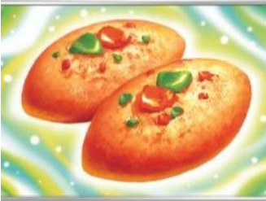

DESCRIÇÃO
Pokémon Diamond, Pearl e Platinum (2006/2008) - Poffin Amigo (Buddy Buddy Poffin)
-> é uma iguaria especial introduzida na quarta geração de Pokémon, especificamente nos jogos
Pokémon Diamond, Pearl e Platinum para o Nintendo DS, e mantida nos remakes
Brilliant Diamond e Shining Pearl (2021) para o Nintendo Switch. Trata-se de um pãozinho
macio feito a partir de frutas silvestres, projetado exclusivamente para melhorar as qualidades de
concurso dos Pokémon.
Aparição: a receita do Poffin Amigo é obtida ao cozinhar frutas na Casa de Poffin
(Poffin House) em Hearthome City.
INGREDIENTES
- 2 xícaras (chá) de farinha de trigo
- 1/4 xícara (chá) de açúcar
- 1 colher (sopa) de fermento em pó
- 1/2 colher (chá) de sal
- 5 colheres (sopa) de manteiga sem sal bem gelada (cortada em cubos)
- 1/2 xícara (chá) de leite americano líquido
- 1 ovo grande
- Corante alimentício em gel (as cores dos sabores do jogo: rosa, azul, verde, amarelo ou roxo)
- Frutas secas picadas ou geleia para rechear (como mirtilos, morangos ou amoras)
MODO DE PREPARO
- Misturar os secos: Em uma tigela grande, misture a farinha de trigo, o açúcar, o fermento em pó e o sal.
- Adicionar a manteiga: Adicione os cubos de manteiga gelada à mistura seca. Com as pontas dos dedos, vá amassando a manteiga com a farinha até formar uma textura de farofa grossa (não deixe a manteiga derreter completamente).
- Unir a massa: Em outro recipiente, bata o ovo com o leite. Despeje na farofa de farinha e misture delicadamente com uma colher até a massa começar a se unir (não sove demais para não solar).
- Dar a cor do Pokémon: Divida a massa em partes se quiser fazer cores diferentes. Adicione algumas gotas do corante escolhido em cada porção e misture até a cor ficar uniforme.
- Modelar e rechear: Abra um pedaço de massa na mão, coloque um pouco de geleia ou frutas picadas no centro e feche modelando em formato oval ou de pãozinho arredondado rústico (bem parecido com o visual do jogo).
- Assar: Disponha os Poffins em uma assadeira forrada com papel-manteiga. Leve ao forno preaquecido a 200°C por cerca de 15 a 18 minutos (eles devem crescer e ficar firmes, mas sem dourar demais por cima para não perder a cor vibrante).